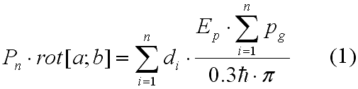
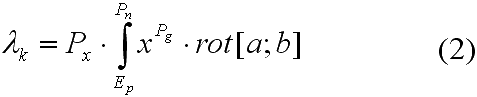
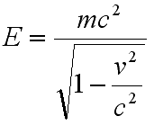

Осциллобусы есть перкутрорное видоизменение осцилляторов с управляемым на-пряжением путем подачи псевдолучей Зюльгергарда Вишенгердера и отклоняемым пото-ком материи. Узконаправленные спектры смещения излучения осциллобусов и распро-странение их поля по поверхности осциляторного псевдонапряжения выражается обыкно-венным уравнением Ван дер Гоофа:

Длина псевдоволны, излучаемой осциллобусом при неэлектрической конвергенции хаотической природы, вычисляется по формуле:

Таким образом, псевдолучи Зюльгергарда напрямую зависят от непроизвольного интеграла материи (Px) и антиматерии (Pg). Антиматерия Pg есть производная по первой составляющей из уравнения (1).
Возвратно-поступательные движения антиматерии типа Pg и кватерглюонов дают возможость судить о непланарной структуре осциллобусов.
Из всего вышесказанного следует простой вывод:

(c) Fire_Damage